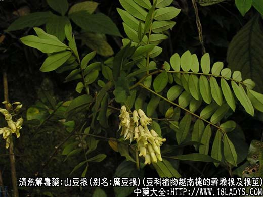
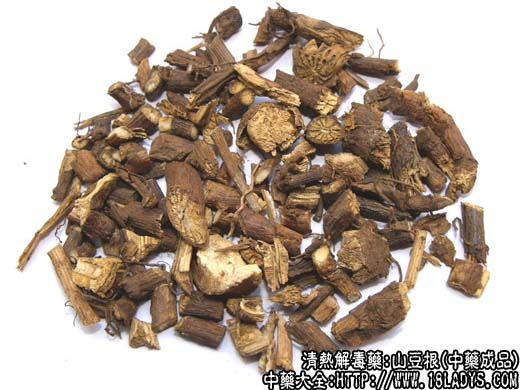
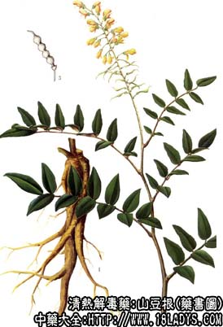

本品为较常用中药。始载宋《开宝本草》。目前各地使用商品比较复杂。按本草书籍记载，古代所用所用的山豆根也不止一种。但使用地区最广的为豆科植物广豆根，并认为这种为正品。东北、华北地区及山东也使用防己科植物蝙蝠葛的根茎。天津、北京则将前者称广豆根，后者称山豆根。
别名：豆根。
1、广豆根
别名：山豆根、小黄连。
来源：为豆科植物越南槐的干燥根及根茎，均为野生。
产地：广西、广东、江西、贵州。
性状鉴别：根茎呈不规则块状（疙瘩头）。上方有茎痕，下方着生数条根，根为长圆柱形，略弯曲，有的有分歧，长短不等。直径4～15毫米。表面棕色或棕黑色。有明显纵皱纹及横长突起皮孔。质地坚硬，不易折断。断面皮部淡棕色，中心木部淡黄色。无髓。气微弱，味极苦，有豆腥气。以根条粗壮，外皮棕褐色。无须根者为佳。
2、山豆根。
来源：为防己科缠绕性藤本植物蝙蝠葛的干燥根茎。均野生。
产地：主产于东北、河北、内蒙古、山西、山东等地。
性状鉴别：根茎呈细长圆柱形，多弯曲，有分支，长可达50厘米，直径1厘米以内。表面淡棕色至暗棕色，有细顺条纹和多数细长而弯曲的细跟或根痕。质韧，难折断。断面纤维性，黄白色，木质部放射状，导管清晰，中央有明显白色髓部。气微，味苦。
以根茎粗细均匀，无须根者为佳。
主要成分：广豆根含苦参硷、氧化苦参硷、臭豆硷、甲基金雀花硷；又含染料木素及另一酚性物。山豆根含蝙蝠葛碱。
功效与作用：1、清热利咽，有消炎作用；
2、动物实验对恶性肿瘤有一定抑制作用。
炮制：切片，生用。
性味：苦、寒。
归经：入肺、大肠经。
功能：清热解毒，利咽消肿。
主治：热毒上攻，咽喉肿痛。
临床应用：1、治咽喉肿痛，牙龈肿痛，属实热症者，配玄参、桔梗等，或射干、牛蒡子，方如喉痛方，可消肿止痛，但虚火所致咽喉肿痛，则不适用。
2、作为癌瘤治疗的辅助药（尤其在癌肺、喉癌的早期），山豆根常配白花蛇舌草、鱼腥草等同用，但疗效尚有待进一步观察。
3、山豆根粉局部外用（涂抹或喷洒），对宫颈炎、口腔炎有消炎作用。
用量：内服6～9g，粉剂1.8～6g，外用适量。
处方举例：喉痛方：山豆根9g、射干9g、桔梗6g、牛蒡子6g、生甘草3g，水煎服。
注：1、广豆根成分：含苦参硷，氧化苦参硷、臭豆硷，甲基金雀花硷等多种生物硷及B-固甾醇，酚性成分，异黄酮。
2、山豆根成分：含蝙蝠葛碱，青藤硷，汉防己硷，多利诺林等多种生物硷。
3、山豆根除以上两种使用地区较广外，根据《中药鉴别手册》记载：江苏、安徽、湖北、山西、河南（部分地区）使用豆科木蓝属多种植物如：华东木蓝、苏木蓝、陕甘木蓝、宜昌木蓝、花木蓝等的根；云南所用为毛茛科植物滇豆根的根茎。昆明则用都可植物云南野豇豆的根。均属于地产地销，各随地区用药习惯。